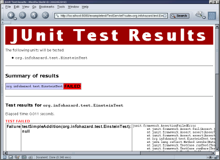

| JUnitEE |
| $Revision: 1.1 $ |
| Home |
| News |
| Documentation |
| Download |
| Project page |
| Contact |
| JUnitEE Wiki |
| User's Guide |
JUnitEE is an extension to the JUnit test framework. JUnit provides the framework for writing your unit tests, and JUnitEE gives you the possibility to run these tests inside your application server. This has the advantage of testing your EJB/servlet-based application in the same environment it will run when in production.
| Contents |
| Packaging JUnitEE |
Adding JUnitEE to your server application is quite easy. You just have to create a new web application which contains the JUnitEE Test Servlet and your test classes. Place junitee.jar and junit.jar and the jar containing your tests in the WEB-INF/lib directory of the WAR. Then you add the web.xml deployment descriptor similar to the one from our example:
<?xml version="1.0"?>
<!DOCTYPE web-app PUBLIC
"-//Sun Microsystems, Inc.//DTD Web Application 2.2//EN"
"http://java.sun.com/j2ee/dtds/web-app_2_2.dtd">
<web-app>
<display-name> Einstein Unit Tester Web Application </display-name>
<servlet>
<servlet-name>JUnitEETestServlet</servlet-name>
<description>JUnitEE test framework</description>
<servlet-class>junit.htmlui.TestServletBase</servlet-class>
</servlet>
<ejb-ref>
<ejb-ref-name>ejb/EinsteinEJB</ejb-ref-name>
<ejb-ref-type>Session</ejb-ref-type>
<home>org.infohazard.ejb.einstein.EinsteinHome</home>
<remote>org.infohazard.ejb.einstein.Einstein</remote>
</ejb-ref>
<servlet-mapping>
<servlet-name>JUnitEETestServlet</servlet-name>
<url-pattern>/TestServlet</url-pattern>
</servlet-mapping>
</web-app>
The final step is to package the test.war together with your application in an EAR and to deploy it to your application server. Now you may start your tests from any browser you like.
| JUnitEE Test Servlet |
The JUnitEE Test Servlet is the central part of JUnitEE - it provides the entry point to run your tests inside your application server and produces a concise summary of the test results (see screenshot).
|  |
You may run the test servlet in two different modes:
- in the Basic Test Mode the servlet will execute a set of test suites which has to be defined in the servlet request
- in the Smart Test Mode the servlet will try to find all test suites available in one or more jar files packaged with the servlet and then will execute all these test suites
The following sections will give you a detailed description of these two modes.
| Basic Test Mode |
In the Basic Test Mode you have to explicitly define the test suites the servlet should execute. You do this by adding one or more key-value-pairs of the form
suite=your.testclass.nameto the URL you enter in your browser. For the sample test case included in the examples of the JUnitEE distribution this would look like
http://host/exampletest/TestServlet?suite=org.infohazard.test.EinsteinTest
By default the test servlet will produce a test report that lists all test suites with their corresponding test result. If there were errors or failures the report will also contain the reason for each error/failure. If you would like to get a more detailed report that also contains a list of all tests included in the test suited with their respective test results, set the parameter
list=truein your request. For the sample test case included in the examples of the JUnitEE distribution this would look like
http://host/exampletest/TestServlet?suite=org.infohazard.test.EinsteinTest&list=true
| Basic Test Mode request parameters | ||
| Parameter | Description | Required |
| suite | Defines the class name of the test case to be executed by the test servlet. This parameter may be used multiple times in one request. | YES |
| list | Set this parameter to whatever value you like to force JUnitEE to produce a more detailed test report that lists all tests included in the executed test suites in combination with their test result. | No |
| Smart Test Mode |
In the Smart Test Mode JUnitEE will try to detect all tests you deployed to the server (which means all classes with a name ending with Test or Tests) and will then execute them. To switch the test servlet to this mode you have to set the parameter
all=truein your request. For the sample test case included in the examples of the JUnitEE distribution this would look like
http://host/exampletest/TestServlet?all=true
To tell the servlet where to look for your tests you have to either set the request parameter
search=path to your test jar inside the WARor to define an init parameter for the JUnitEE servlet in the deployment descriptor of the test.war.
So for our example you either have to enter the URL
http://host/exampletest/TestServlet?all=true&search=WEB-INF/lib/junitee-example-test.jarin your browser or extend the deployment descriptor like
<servlet>
<servlet-name>JUnitEETestServlet</servlet-name>
<description>JUnitEE test framework</description>
<servlet-class>junit.htmlui.TestServletBase</servlet-class>
<init-param>
<param-name>searchResources</param-name>
<param-value>WEB-INF/lib/junitee-example-test.jar</param-value>
</init-param>
</servlet>
| Smart Test Mode request parameters | ||
| Parameter | Description | Required |
| all | Set this parameter to whatever value you like to switch the test servlet to Smart Test Mode | YES |
| search | Define the resource the servlet should use to search for test classes. | If there is no searchResource init parameter |
| list | Set this parameter to whatever value you like to force JUnitEE to produce a more detailed test report that lists all tests included in the executed test suites in combination with their test result. | No |
| Smart Test Mode servlet init parameters | ||
| Parameter | Description | Required |
| searchResources | Comma-separated list of resources the servlet should use to search for test classes. | If you don't use the search request parameter |
| JUnitEE Ant Task |
JUnitEE provides a task for the Ant build tool to integrate your JUnitEE tests with your build process. To use this task you have to declare a new task in your build script:
<taskdef name="junitee"
classname="junitee.anttask.JUnitEETask"
classpath="junitee-anttask.jar"/>
The JUnitEETask supports the following attributes:
| JUnitEETask attributes | ||
| Attribute | Description | Required |
| url | URL of the JUnitEE Test Servlet | YES |
| haltonfailure | Stop the build if a failure occurs | No |
| haltonerror | Stop the build if an error or a failure occurs | No |
The task requires a set of nested <test> elements to define which tests to run. Each <test> element supports these attributes:
| Test attributes | ||
| Attribute | Description | Required |
| name | Name of the test class to be executed | If runall is not set |
| runall | Execute all tests | If name is not set |
| resource | Comma-separated list of all resources containing test classes | If runall is set and the servlet has not init parameter |
This example will run the test suite org.infohazard.test.EinsteinTest and halt the build if a failure occurs. To execute the test the given URL will be used.
<target name="do-run-tests">
<junitee url="http://localhost:8080/exampletest/TestServlet">
<test name="org.infohazard.test.EinsteinTest" haltonfailure="true" />
</junitee>
</target>
This example will run all tests available in WEB-INF/lib/mytests.jar.
<target name="do-run-tests">
<junitee url="http://localhost:8080/exampletest/TestServlet">
<test runall="true" resource="WEB-INF/lib/mytests.jar" />
</junitee>
</target>
| This project is hosted by |
|